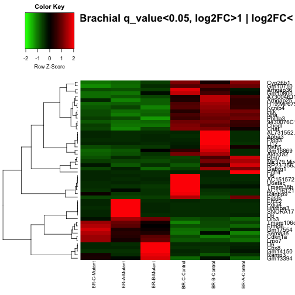

.Rmd script used to generate this page here: https://github.com/ljcohen/ljcohen.github.io/blob/master/analyses/Dasen/scripts/Dasen_RNAseq_report_brachial_thoracic_overlap.Rmd
Filenames for brachial-level transcripts are here:
## [1] "BR-A-Control_counts.txt" "BR-A-Mutant_counts.txt"
## [3] "BR-B-Control_counts.txt" "BR-B-Mutant_counts.txt"
## [5] "BR-C-Control_counts.txt" "BR-C-Mutant_counts.txt"
Filenames for thoracic-level transcripts are here:
## [1] "TH-A-Control_counts.txt" "TH-A-Mutant_counts.txt"
## [3] "TH-B-Control_counts.txt" "TH-B-Mutant_counts.txt"
## [5] "TH-C-Control_counts.txt" "TH-C-Mutant_counts.txt"
The size of the table with all brachial transcripts is:
## [1] 12701 15
The size of the brachial table with only significant transcripts, padj<0.05 is:
## [1] 64 15
The size of the table with all thoracic transcripts is:
## [1] 15557 15
The size of the thoracic table with only significant transcripts, padj<0.05 is:
## [1] 129 15

## Error in hclust(as.dist(1 - cor(t(d), method = "pearson")), method = "complete"): must have n >= 2 objects to cluster
## Error in nrow(tree$merge): object 'hr' not found
## Error in unique(mycl): error in evaluating the argument 'x' in selecting a method for function 'unique': Error: object 'mycl' not found
## Error in eval(expr, envir, enclos): object 'clusterCols' not found
## Error in as.dendrogram(hr): object 'hr' not found
File:
r
write.csv(Brachial_Thoracic_results,"Dasen_Brachial_Thoracic_merged_padj0.05.csv")
Lisa Cohen, PhD student in MCIP, UC Davis
Phone: 321-427-9335
Email: ljcohen@ucdavis.edu
NYU Langone Medical Center
Bioinformatics Core, Genome Technology Center, OCS
Email: Genomics@nyumc.org
Phone: 646-501-2834
http://ocs.med.nyu.edu/bioinformatics-core
http://ocs.med.nyu.edu/genome-technology-center
Dr. Steven Shen, Associate Professor
Email: ShuQuan.Shen@nyumc.org
Phone: 212-263-2234
Genome Technology Center, Office of Collaborative Sciences
and Center for Health Informatics and Bioinformatics
NYU School of Medicine,
227 E30th Street, Room 748,
New York, NY 10016
M. I. Love, W. Huber, S. Anders: Moderated estimation of fold change and dispersion for RNA-seq data with DESeq2. Genome Biology 2014, 15:550. http://dx.doi.org/10.1186/s13059-014-0550-8
R-Bioconductor: http://www.bioconductor.org/
DESeq2: http://www.bioconductor.org/packages/release/bioc/vignettes/DESeq2/inst/doc/DESeq2.pdf